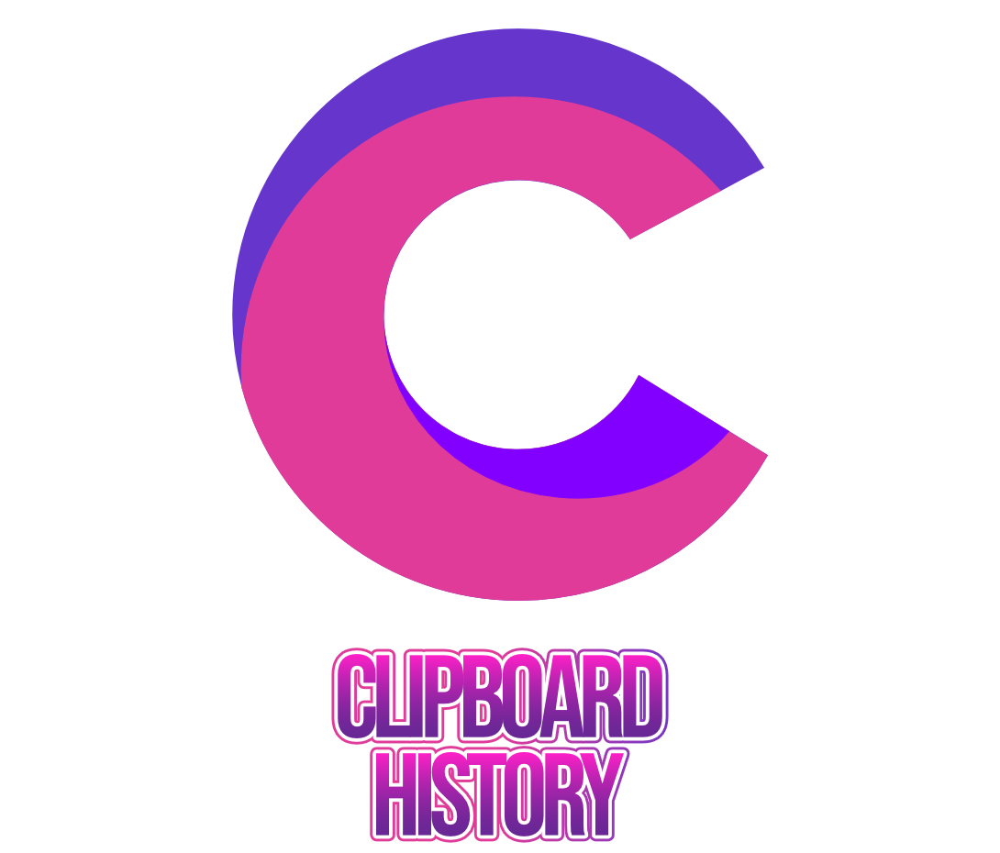

Selection Shortcuts
- Ctrl + Left Click - Single entry selection
- Ctrl + A - Select all entries
- Alt + A - Deselect all entries
- Ctrl + I - Inverts the current selection.(Selects everything if nothing is selected)
Copying Shortcuts
- Ctrl + C - Copy all selected entries (Must have at least one entry selected)
- Ctrl + Shift + C - Copy all entries
Delete Shortcuts
- Ctrl + Delete - Delete all entries (This will delete all entries, selected or not)
- Delete - Delete all selected entries (Must have at least one entry selected)
Window Top Most Shortcut
- T - Enables/Disables the window ability top remain on top of other apps
Undo Shortcut
- Ctrl+Z - Undoes the previous action/s (Keep in mind that undos can't be redone yet)
Saving Shortcuts
- Ctrl+S - Saves all entries as a text(.txt) file (selected or not)
- Alt+S - Saves all selected entries as a text(.txt) file (Must have at least one entry selected)
Closing The Application Shortcut
- F4 - This prompts a warning window which asks you whether or not you want to exit the application
Options Shortcuts
- P - Disables/enables pop up messages
- Ctrl+D - Opens the Documentation